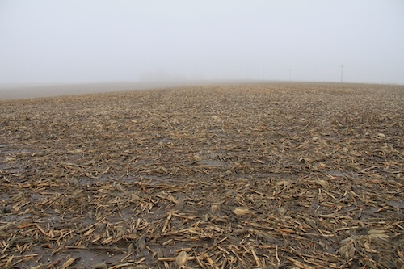
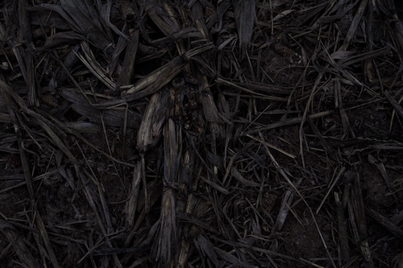
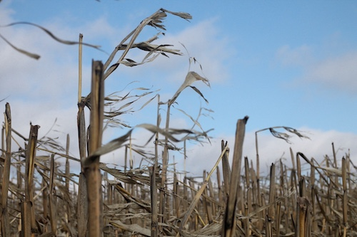
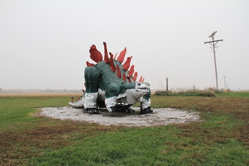

Other Places to Visit!
- The Villisca Axw Murder House
- American Gothic Barn"
- World s Largest Popcorn Ball
- Squirrel Cage Jail
- World's Largest Man-made Grotto
- Dutch Speaking town of Pella, Iowa

Other Places to Visit!
In 2023, I received a small seed grant from the UNLV Fine Arts Department to photograph areas affected by a rare haboob dust storm that struck Northwest Iowa the previous year. An important facet of the project was speaking with residents to gather their assessments of climate events and how state, local, and national officials should address critical issues related to soil erosion and land degradation in their region. I immensely enjoyed the range of experiences I encountered and the opportunity to revisit a formative place from my childhood (I went to middle school and high school in Cedar Rapids, IA). Although the interview portion had stalled, diving into preliminary research and photographing the Iowa fields was a pivotal moment when I decided to find a graduate program that could better prepare me to visually convey the story of extreme weather and climate change.
Select and click on an image to locate the photos on the map! Pictures were taken in October 2023.
|
 |
 |
|
 |
 |